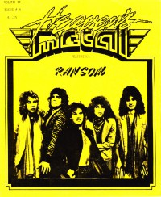

Ransom
|  |
| 1987 Heaven's Metal |
Media coverage:
- 1987 in Heaven's Metal "Ransom", by Doug Van Pelt
- Feb 1991 in Heaven's Metal "Concert Review: Metal Midnight IV", by Doug Van Pelt
- Mar 1991 in Harvest Rock Syndicate "Metal Shop: Women In Metal Rock!", by Dave Palmer
- Apr 1991 in Heaven's Metal "Lisa Faxom: Ransom's Role Model", by Sharon David Shubin
- Mar 1992 in Heaven's Metal "Ransom Notes", by Doug Van Pelt
Albums & reviews:
1989: Once And For All
- Jul 1989 in Heaven's Metal, by Doug Van Pelt
- Jan 1991 in Harvest Rock Syndicate, by Kevin Allison
- Apr 1991 in CCM, by Doug Van Pelt
- Apr 1991 in Heaven's Metal, by I. B. Willis
- Fall 1991 in YouthWorker, by Steve Rabey
- Mar 1992 in Heaven's Metal, by Phil Sterling
- Mar 1992 in Syndicate, by Kevin Allison
- Apr 1992 in CCM, by Doug Van Pelt
- May 2011 in Down The Line, by Matt Crosslin
- Jul 2011 in Heaven's Metal, by Jeff McCormack
Books about Ransom
- "Ransom" in The Encyclopedia of Contemporary Christian Music (Mark Allan Powell, 2002)

© 2011 CMnexus. Last updated September 2019. Contact: editor -AT- cmnexus -DØT- org About